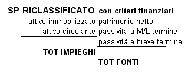

Torna alla pagina di Economia ed Organizzazione Aziendale
:: Economia ed Organizzazione Aziendale ::
Lezione 28/05/2008
Immobilizzazioni Immateriali
Sono beni intangibili a disposizione del processo produttivo che devono essere ammortizzati:
1. ONERI PLURIENNALI
- costi di impianto e costi di ampliamento
- spese in ricerca e sviluppo
- spese di pubblicità
2. BENI IMMATERIALI
- brevetti(tutela anche a livello internazionale)
- marchi
- licenze
- software
3. AVVIAMENTO: Valore Economico che nasce dall'acquisto di un azienda o un ramo dell'azienda. Si ottiene da: PREZZO DI CESSIONE - PATRIMONIO NETTO CONTABILE
Note:
- le 3 categorie di valori devono essere ammortizzate
- le immobilizzazioni immateriali si ammortizzano con il procedimento DIRETTO, cioè senza la costituzione di un fondo ammortamento
- il Codice Civile stabilisce un periodo di ammortamento per "spese di impianto" e "avviamento" in 5 anni, Aliquota del 20%
- nel caso in SP siano presenti costi di impianto è possibile distribuire utili solo se si costituisce una riserva del valore pari al residuo da ammortizzare dei costi di impianto
Gli IAS (Leggi Internazionali)
Secondo le Leggi Internazionali bisogna seguire le seguenti regole:
- beni immateriali → in SP
- avviamento → in SP. NOTA: è possibile inserire il valore dell'avviamento in SP con il consenso del collegio sindacale
- oneri pluriennali → in CE
Corporate Governance
Società per azioni, nella quale si possono identificare i seguenti organismi:
- Consiglio d'Amministrazione
- Assemblea Azionisti
- Collegio Sindacale(AUDIT INTERNO: controlla la contabilità e la corrispondenza tra contabilità e bilancio d'esercizio)
Analisi di Bilancio
Il fine di un bilancio d'esercizio:
- sistema informativo
- stakeholders(destinatari):
- amministratori
- azionisti
- dipendenti
- professionisti
- consulenti
- clienti/fornitori/banche/stato
E' necessario che il bilancio sia CORRETTO e VERITIERO ⇒ portano all'ATTENDIBILITA' del bilancio(condizione necessaria)
Per soddisfare la condizione dell'attendibilità si devono osservare i seguenti principi contabili:
1. principio di CONTINUITA'
a) di gestione(il fatto che l'azienda viva nel lungo periodo)
b) di utilizzo dei criteri di valutazione
2. principio di PRUDENZA
a)quando si inseriscono componenti positivi di reddito solo se effettivamente realizzati, non presunti
b)quando si inseriscono in contabilità componenti negativi di reddito effettivamente sostenuti e presunti/probabili
3. principio di COMPETENZA
NON RICORDO MINIMAMENTE PERCHE' HA DETTO QUESTA COSA IN QUESTO PUNTO
Art. 2423 bis Cod. Civ.
Deroga:
- fatto eccezionale
- in nota integrativa gli amministratori giustificano la scelta
- in nota integrativa si mostra l'effetto della variazione del criterio di valutazione
Fasi dell'Analisi di Bilancio
Riclassificazione dello SP
avviene attraverso criteri finanziari:
- ATTIVITA': Liquidità
- PASSIVITA' e PN: Esigibilità
Obiettivo
ordinare le poste di bilancio in base al loro grado di trasformabilità in moneta
Valori dell'ATTIVO
- ATTIVO IMMOBILIZZATO
- immobilizzazioni immateriali
- immobilizzazioni materiali
- immobilizzazioni finanziarie
- ATTIVO CIRCOLANTE
- rimanenze
- crediti
- disponibilità liquide immediate
Valori del PASSIVO
- PATRIMONIO NETTO
- capitale sociale
- riserve
- utili d'esercizio precedenti(utili a nuovo)
- utili d'esercizio
- PASSIVITA' A M/L TERMINE(> 12 mesi)
- PASSIVITA' A BREVE TERMINE
- debiti v/fornitori
- debiti diversi
- banca c/c passivi
- ratei e risconti passivi

Torna alla pagina di Economia ed Organizzazione Aziendale